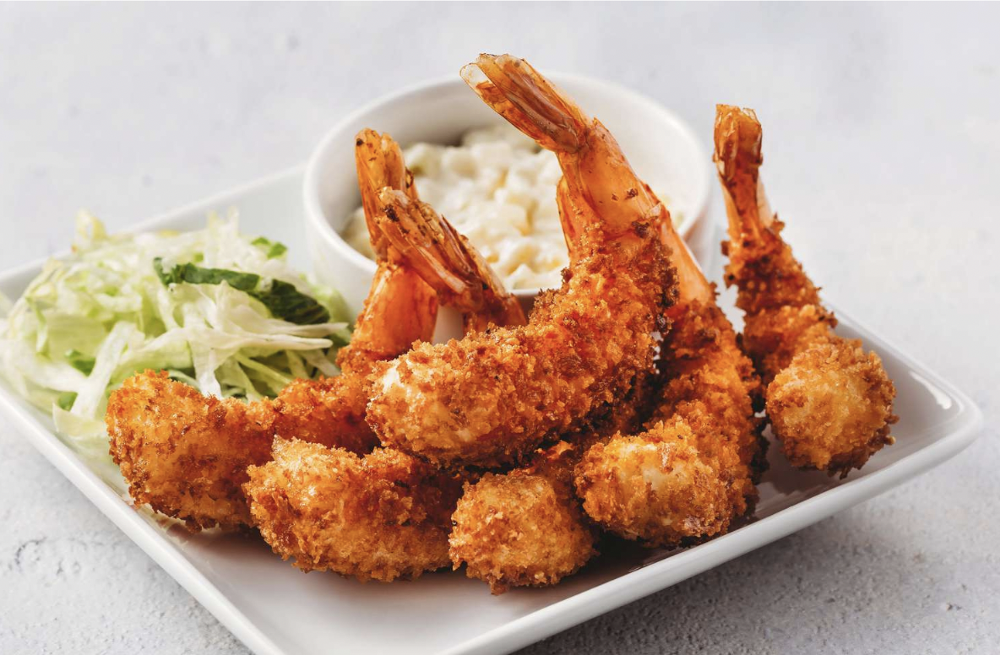

Difficulty: Easy | Time: 2 hours
Ebi Fry
Japanese dish of deep-fried, panko-crusted shrimp
Ingredients
- 1 pound medium shrimp, peeled (tails left on) and deveined
- ½ teaspoon salt
- ½ teaspoon ground black pepper
- ½ teaspoon garlic powder
- 1 cup all-purpose flour
- 1 teaspoon paprika
- 2 large eggs, beaten
- 1 cup panko crumbs
- 1 quart vegetable oil for frying
- 3 spoons of baking powder or salt
Instructions
- Gather all ingredients.
- Dry brine the shrimp with baking soda and salt.
- Wash the shrimp in water. Drain the shrimp well and use paper towels to dry it off.
- Place shrimp in a bowl and season with salt, pepper, and garlic powder.
- Mix flour and paprika together in a shallow bowl. Place eggs in a second bowl and panko in a third bowl.
- Heat oil in a deep fryer or deep skillet to 375°F (190°C). Dip each shrimp into flour mixture, then into egg, and finally into panko crumbs to coat.
- Fry a few shrimp at a time in the hot oil until golden brown, about 5 minutes.
- Remove with a slotted spoon and drain on paper towels before serving.
- Serve and enjoy!
